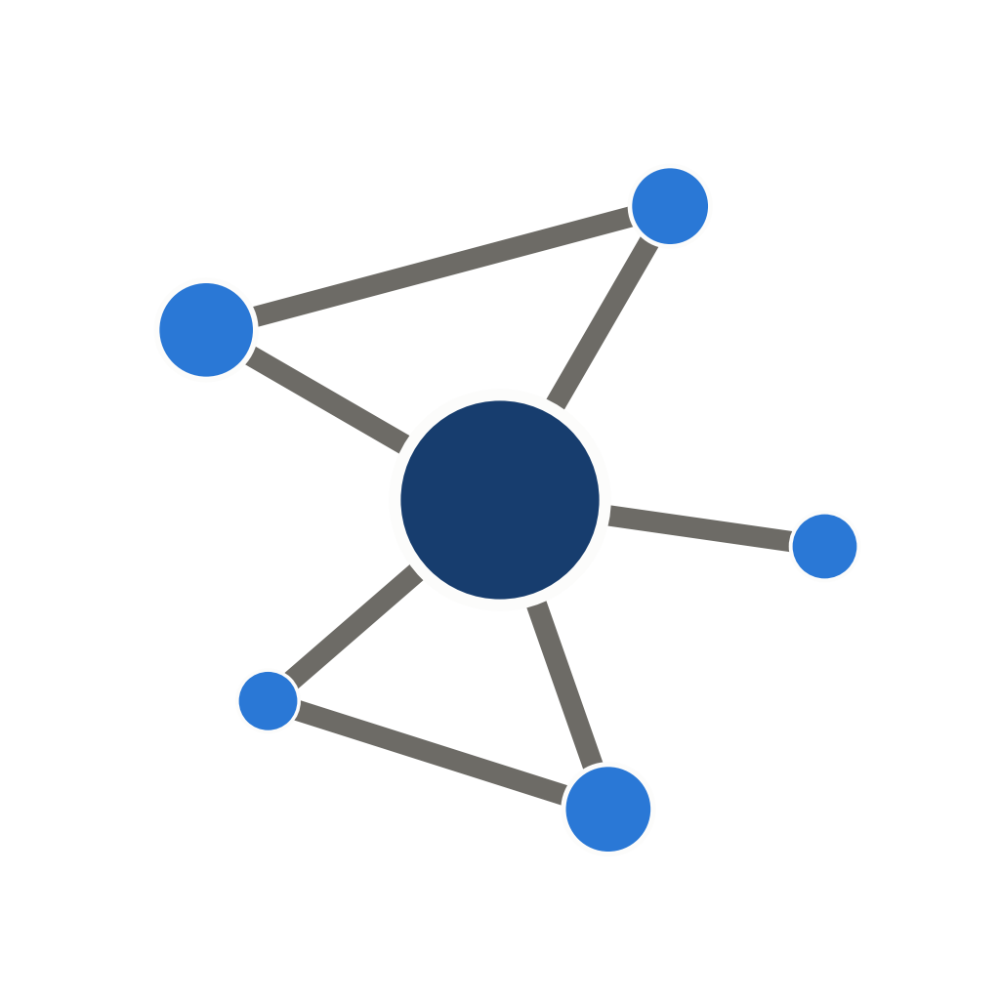

People Picking PipelineLive interactive 3D network diagrams, generated from the repo's synthetic example dataset.
Drag to rotate, scroll to zoom, hover a node for details, click a legend entry to show/hide respondents or not-yet-responded cohort members. Height shows indegree -- the more often someone was picked, the taller their tower.
examples/example_raw_qualtrics.csv) -- not real survey responses.
Each page is fully self-contained; running the pipeline on your own data produces
the same kind of file for your own cohort, viewable offline with no server needed.